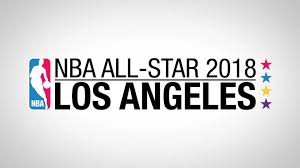
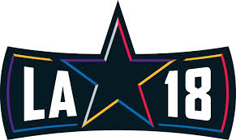
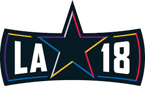

The NBA today announced ticket availability for an expanded lineup of NBA All-Star 2018 fan events taking place Friday, Feb. 16 through Sunday, Feb. 18 in Los Angeles. Tickets are available now on NBATickets.com and start at just $10. Tipping off the weekend’s events on Friday, Feb. 16 for the first time, the NBA will offer fans the chance to see the league’s top first and second-year players prepare for that evening’s showcase with the Mtn Dew Kickstart Rising Stars Practice at Verizon Up Arena at the Los Angeles Convention Center (LACC) at 9:30 a.m. PT. Later that day, some of the biggest stars from film, television, music and sports will take the court for the NBA All-Star Celebrity Game presented by Ruffles at 4 p.m. PT at Verizon Up Arena at LACC. To close out the night, Mtn Dew Kickstart Rising Stars will take place at STAPLES Center at 6 p.m. PT.
LOS ANGELES On Saturday, Feb. 17 fans will get to witness the entire NBA All-Star squad train for Sunday’s game during the NBA All-Star Practice at Verizon Up Arena at LACC at 11 a.m. PT. The league will also host the NBA G League International Challenge presented by Kumho Tire on Sunday, Feb. 18 at Verizon Up Arena at LACC, in which the Mexican National Team will compete against stars from the NBA G League – the NBA’s official minor league.
H/A Jersey.jpeg)
Fans account for 50 percent of the vote to determine the 10 starters for the 67th NBA All-Star Game, which will take place on Sunday, Feb. 18 at Staples Center in Los Angeles (8 p.m. ET/5 p.m. PT, TNT). All current NBA players and a panel of basketball media account for 25 percent each, with every participant completing one full ballot featuring two guards and three frontcourt players from each conference. Voting for fans, players and media will conclude on Monday, Jan. 15 at 11:59 p.m. ET.
NBA WEEKEND.jpeg)
In the Western Conference, Curry (1,369,658) has passed teammate Kevin Durant (1,326,059) to become the leading vote-getter. Curry, the Houston Rockets’ James Harden (978,540) and the Oklahoma City Thunder’s Russell Westbrook (791,332) continue to be the top three guards in the West. Durant maintains the top spot in the West frontcourt. The New Orleans Pelicans’ Anthony Davis (664,687) remains in second place, while Golden State’s Draymond Green (616,730) has moved ahead of New Orleans’ DeMarcus Cousins (587,835) for third place.
ALLSTARS.jpeg)
Under a new All-Star Game format that replaces the traditional matchup between conferences, two captains will choose the rosters from the pool of players voted as starters and reserves. The captains will be the All-Star starter from each conference who receives the most fan votes in his conference.
CAPTAINS.jpeg)
Gone is the traditional East-versus-West format that had been used since 1951, replaced by a draft in which the top two vote-getters act as captains and select their teams from a pool of All-Stars. Which means we could see LeBron James and James Harden on the same team, or Kyrie Irving and Stephen Curry sharing a backcourt. The pool of All-Stars will be picked in the way we're used to seeing. Fans, players and media will vote for the starters -- two guards and three frontcourt players from each conference -- and coaches will choose the reserves. Those coach's picks are great for never-been All-Stars who are looking to become first-time All-Stars.
ALLSTAR.jpeg)
The Eastern Conference backcourt is crowded with a half-dozen other players warranting serious consideration. Lowry remains as impactful as ever and DeRozan is having another DeRozan-esque season. He’s a three-time all-star and that will carry weight with coaches. Beal is close to his first nod and so is Ben Simmons, who is the only rookie with a legit shot of being selected. We’ll need to make room for John Wall once he gets a few more games under his belt and Kemba Walker is trying mightily to keep the sinking Hornets afloat. Good players will be left home. But not RUSSELL WESTBROOK
RW-OKC.jpeg)
All voting ends tonight, Monday, Jan. 15 at 11:59 p.m. ET. As of last Thursday, when the latest ballots were announced, Antetokounmpo trailed James, 1,480,954 to 1,622,838. That's a difference of only 141,884 votes, and considering the near-endless opportunity to vote, the Bucks are stumping hard on social media for their beloved superstar, hoping Antetokounmpo's large international following and Milwaukee's devoted local fan base can propel a late, come-from-behind win.
GA-MIL.jpeg)
NBA All-Star 2018 in Los Angeles will bring together some of the most talented and passionate players in the league’s history for a global celebration of the game. The 67th NBA All-Star Game, which will take place on Sunday, Feb. 18 at Staples Center, will reach fans in more than 200 countries and territories in more than 40 languages. TNT will televise the All-Star Game for the 16th consecutive year, marking Turner Sports’ 33rd year of NBA All-Star coverage. Staples Center will also host Mtn Dew Kickstart Rising Stars on Friday, Feb. 16 and State Farm All-Star Saturday Night on Saturday, Feb. 17. The NBA All-Star Practice, NBA All-Star Celebrity Game presented by Ruffles, Mtn Dew Kickstart Rising Stars Practice and NBA G League International Challenge presented by Kumho Tire will take place at Verizon Up Arena at Los Angeles Convention Center.
NBA IN LA2018.jpeg) 
